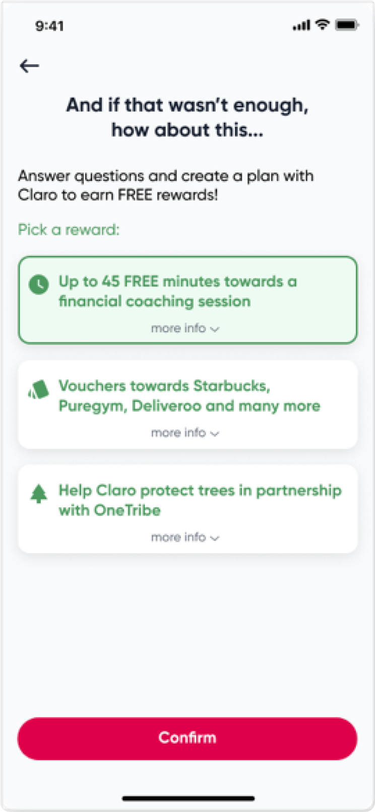

Comparative test
Remote unmoderated testing with 35 candidates across 2 prototypes was conducted to collect data on task performance, SUS (System Usability Score) and survey to capture user motivations and preferences.
Findings
Building a financial plan in a user-preferred order achieved more task completions. Choosing a financial goal that was very important provided motivation to also complete aspects of tthe journey perceived as less relevant.
Candidates earlier in their financial journey obtained more value from using the prototype and were also more engaged. These typically knew less about financial planning or hadn’t identified their goals yet.
Candidates were split across the rewards to receive by completing the financial plan.
The majority appreciated creating a financial plan required extensive data capture, but still felt that the journey was too long, with a recommendation to:
- Shift attitudes from data capture steps to creating a plan
- Decompose the journey into obvious chunks that aren't just about answering questions.
Design iteration
A further iteration of medium fidelity wireframes to incorporate testing discoveries.

Choose reward instead of selecting for them increasing motivation with
relevancy.
Flexible goal-setting in a sequence appropriate to the individual - assuming key goal completion = task completion is more likely.
Timely messages about situations to create a sense of inclusion.
Change tone across the journey from ‘data capture’ to ‘getting a financial plan’.